Every part of the sorghum plant has commercial value — from food and beverages to energy and soil improvement.
Fiecare parte a plantei de sorg are valoare comercială — de la alimente și băuturi la energie și îmbunătățirea solului.
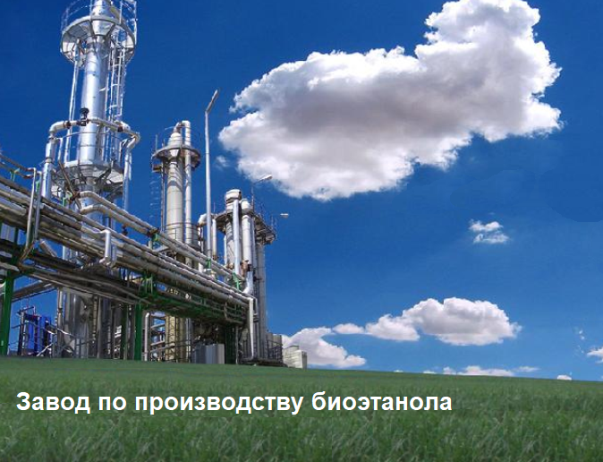
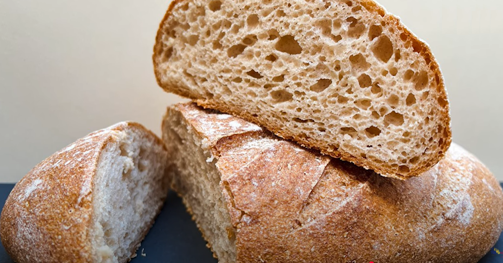
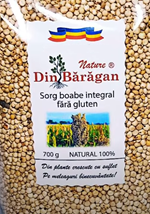
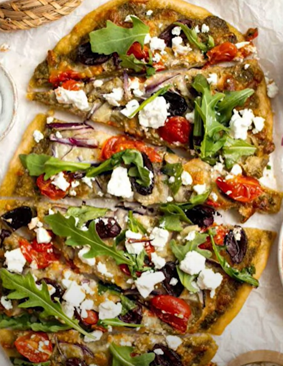
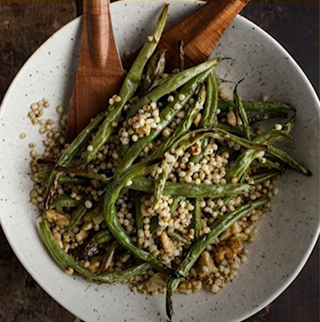
Sorghum silage matches maize in feed value — 22 feed units per 100 kg. High sugar content (15–18%) makes it ideal for cattle, poultry, goats, pigs and more.
Silozul de sorg egalează porumbul ca valoare furajeră — 22 unități nutritive la 100 kg. Conținutul ridicat de zahăr (15–18%) îl face ideal pentru bovine, păsări, caprine, porcine și altele.
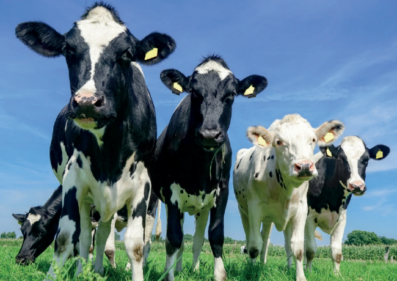
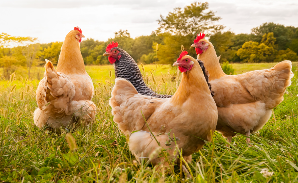
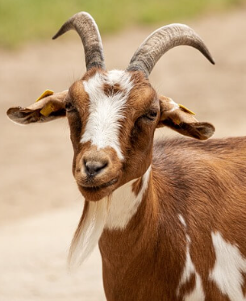
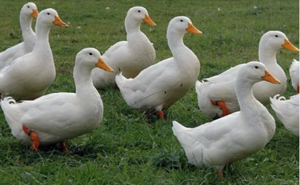
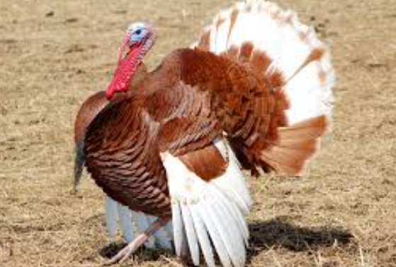
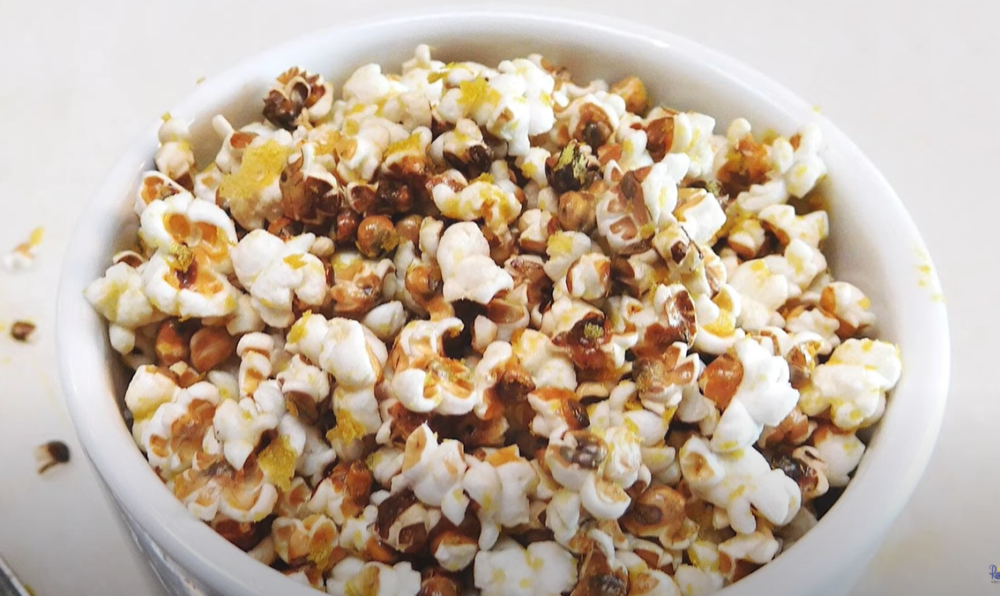
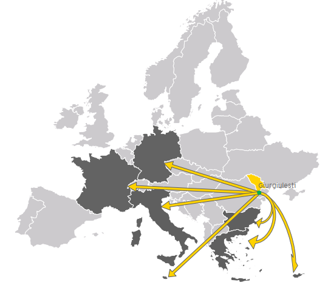
Accessible via Giurgiulești port on the Danube — direct water routes to Black Sea, Mediterranean and Central European markets.
Accesibil prin portul Giurgiulești de pe Dunăre — rute directe pe apă către Marea Neagră, Mediterana și piețele Europei Centrale.
Sorgreed is a family of sweet sorghum hybrids (Porumbeni 4, 5, SASM 1 & 2) created by Dr. Gheorghe Moraru that are morphologically analogous to sugarcane. They grow in temperate climates — including Moldova — with a fraction of the resources sugarcane requires, making them a transformative feedstock for food, beverages, and bioenergy.
Sorgreed este o familie de hibrizi de sorg dulce (Porumbeni 4, 5, SASM 1 & 2) creați de Dr. Gheorghe Moraru, morfologic analogi cu trestia de zahăr. Cresc în climatul temperat — inclusiv Moldova — cu o fracțiune din resursele necesare trestiei de zahăr, devenind o materie primă de referință pentru alimente, băuturi și bioenergie.
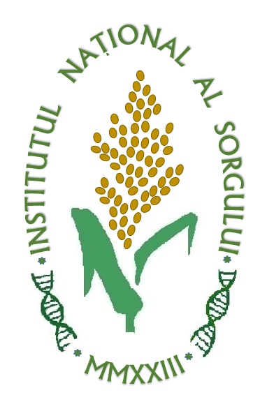
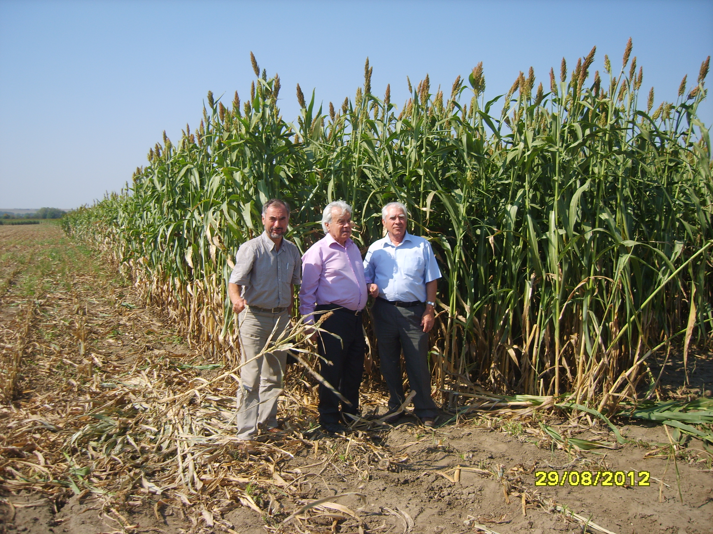
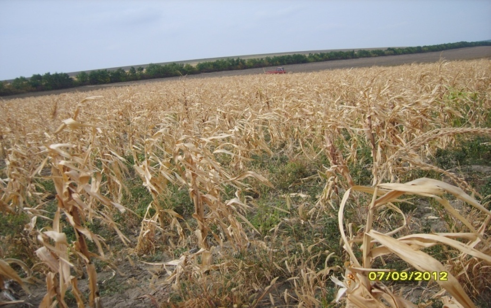
Cultivation technology is identical to silage maize — same machinery and equipment set. Sowing norm: 5–6 kg/ha seeds via pneumatic seed drill (maize type). Crop rotation without irrigation: Sorgreed → Peas/Beans → Winter Wheat → Sorgreed. Under irrigation, monoculture is possible. Recommended nitrogen: 80–120 kg N/ha. Water-charging irrigation before sowing: 600–800 m³/ha, plus 2–3 irrigations at 280 m³/ha.
Tehnologia de cultivare este identică cu silozul de porumb — același set de mașini și echipamente. Norma de semănat: 5–6 kg/ha semințe cu semănătoare pneumatică (tip porumb). Rotație fără irigare: Sorgreed → Mazăre/Leguminoase → Grâu de iarnă → Sorgreed. Cu irigare, monocultura este posibilă. Azot recomandat: 80–120 kg N/ha. Irigare de încărcare înainte de semănat: 600–800 m³/ha, plus 2–3 irigări a 280 m³/ha.
Harvesting requires specialized heavy machinery — e.g. KRONE sugarcane harvester, which processes 3,800 tonnes of biomass in 11 hours. Biomass cost in Moldova: ~€9.35/tonne (delivered to processing unit, 2011 reference price).
Recoltarea necesită mașini specializate grele — ex. combina KRONE pentru trestie de zahăr, care procesează 3.800 tone de biomasă în 11 ore. Costul biomasei în Moldova: ~€9,35/tonă (livrată la unitatea de procesare, prețuri 2011).
| Parameter | Parametru | Sugarcane | Trestie de zahăr | Sorgreed | |
|---|---|---|---|---|---|
| Vegetation period | Perioadă de vegetație | 12–18 months | 12–18 luni | 4–4.5 months | 4–4,5 luni |
| Transpiration (kg H₂O per kg dry matter) | Transpirație (kg H₂O per kg substanță uscată) | ~450 | ~450 | ~60 | |
| Sugar content in juice | Zahăr în suc | 14–16% (saccharose 100%) | 14–16% (zaharoză 100%) | 12–18% (glucose+fructose+sucrose) | 12–18% (glucoză+fructoză+zaharoză) |
| Climate zone | Zonă climatică | Tropical/subtropical only | Doar tropical/subtropical | Temperate climates ✓ | Climate temperate ✓ |
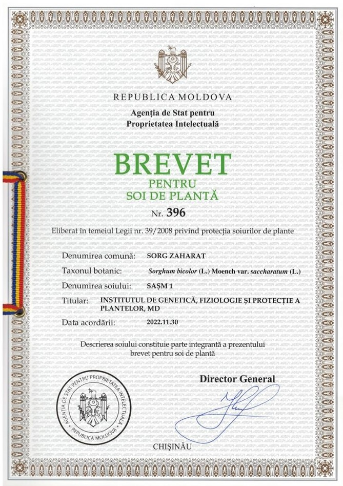
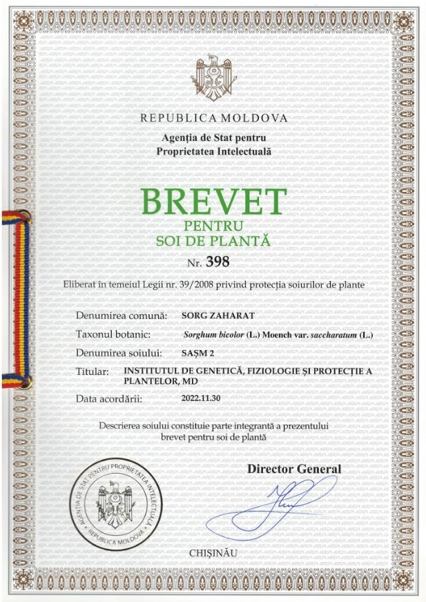
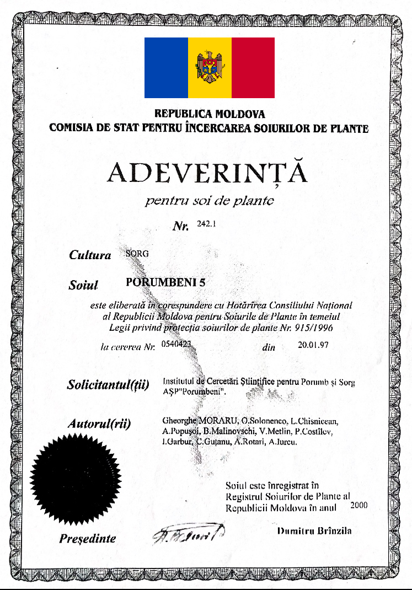
Soriz was created in the 1980s at the Research Institute for Maize and Sorghum in Moldova by Dr. Gheorghe Moraru, through crosses between grain sorghum, Sudan grass, and African relatives. Its grain is biochemically similar to rice — gluten-free, oval, light-yellow — making it a versatile food and feed crop for both human nutrition and livestock, requiring far less water than either maize or rice.
Sorizul a fost creat în anii 1980 la Institutul de Cercetare pentru Porumb și Sorg din Moldova de Dr. Gheorghe Moraru, prin încrucișarea sorgului cu iarba Sudan și specii africane înrudite. Boabele sale sunt biochimic similare cu orezul — fără gluten, ovale, galben-deschis — ceea ce îl face o cultură polivalentă pentru alimentația umană și animală, necesitând mult mai puțină apă decât porumbul sau orezul.
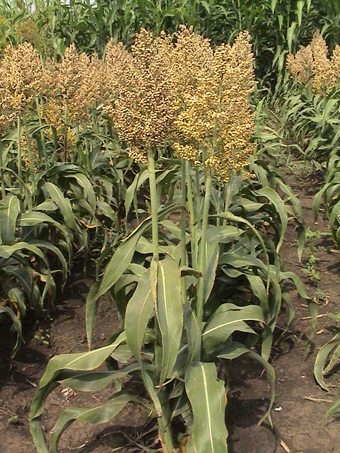
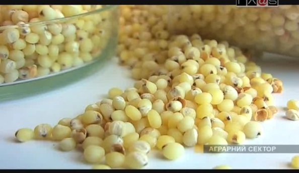
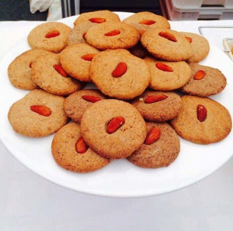
Soriz is grown using standard grain sorghum technology — same machinery as maize. Plant height 110–140 cm makes it resistant to lodging and well-adapted to combine harvesting (grain cereal combines, first group). 2–3 inter-row mechanical treatments; herbicide application optional. In dry years, especially in southern Moldova (400–500 mm annual rainfall), Soriz outperforms maize by 2–3 t/ha.
Sorizul se cultivă cu tehnologia standard a sorgului granifer — aceleași mașini ca la porumb. Înălțimea de 110–140 cm îl face rezistent la cădere și adaptat bine la recoltarea mecanizată (combine pentru cereale, grupa I). 2–3 lucrări mecanice între rânduri; aplicarea erbicidelor este opțională. În anii secetoși, mai ales în sudul Moldovei (400–500 mm precipitații anuale), Sorizul depășește porumbul cu 2–3 t/ha.
Cooking guide: Soak groats 2 hours at room temperature. Loose porridge ratio 4:1 (water:groats); viscous ratio 5:1. Roast in oven at 110–115°C (4–5 cm layer) for faster, crumblier result. Porridge stays crumbly when refrigerated — ideal for batch cooking (schools, hospitals, canteens).
Ghid de gătit: Înmuiați crupele 2 ore la temperatura camerei. Terci sfărâmicios 4:1 (apă:crupe); terci vâscos 5:1. Prăjiți la cuptor la 110–115°C (strat 4–5 cm) pentru rezultat mai rapid și sfărâmicios. Terciu rămâne sfărâmicios la frigider — ideal pentru gătit în cantități mari (școli, spitale, cantine).
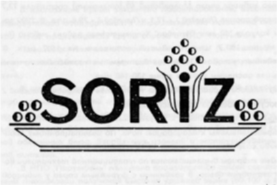
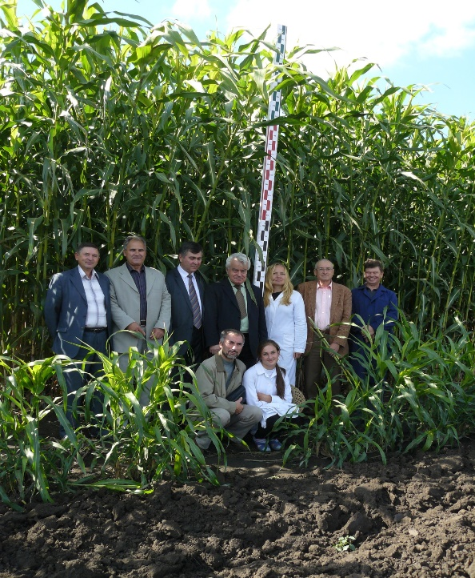
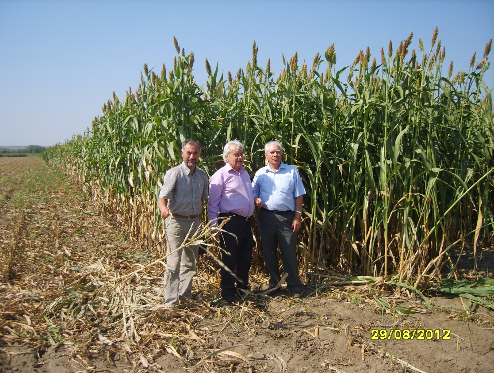